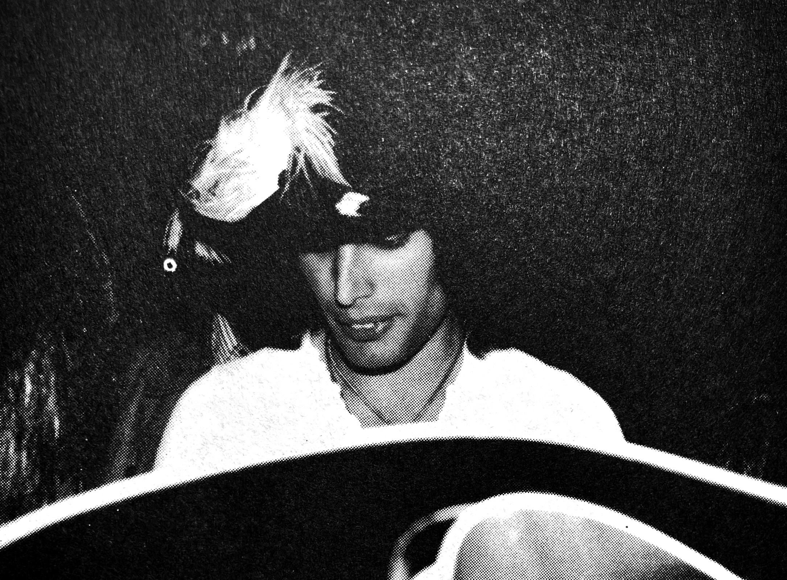
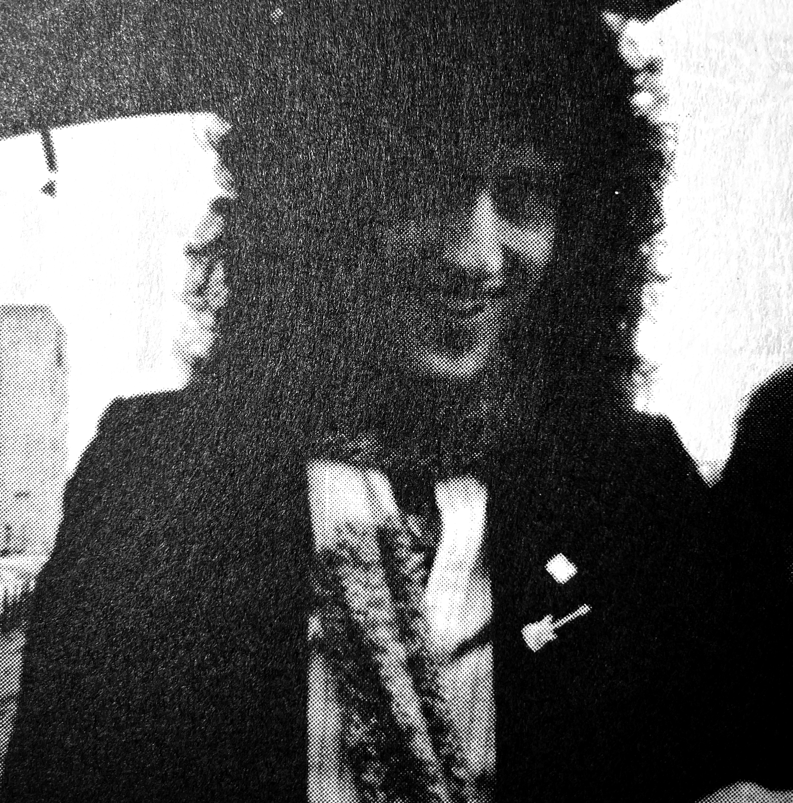
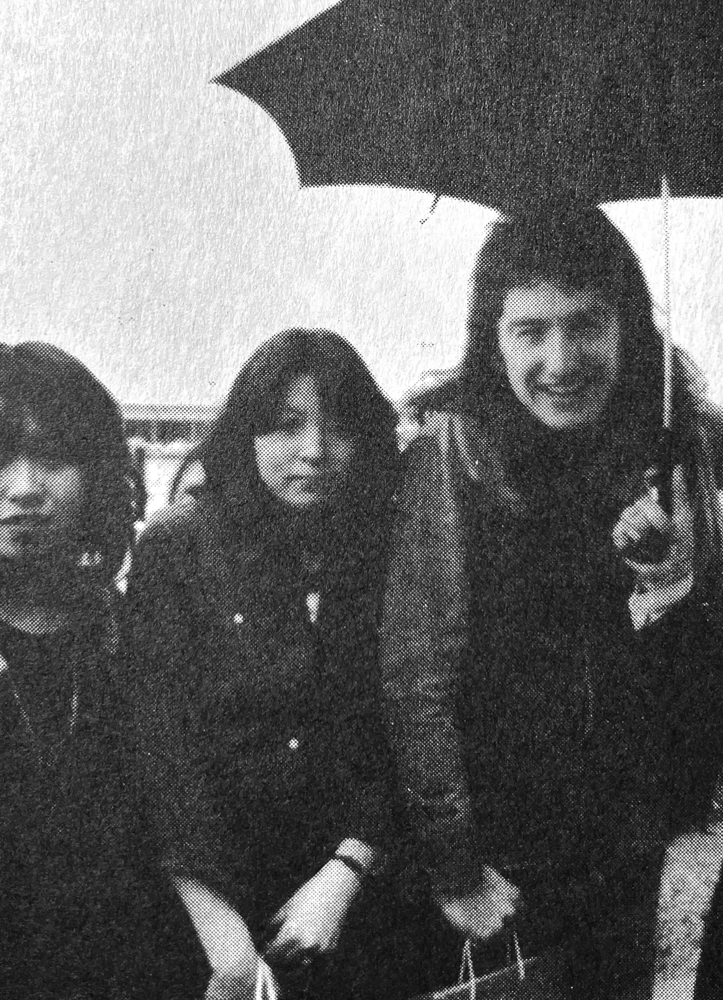

Queen in Japan, April 23rd 1975
by JOE

"I've finally found my people!" I thought to myself. By that I meant the like-minded misfits I had been searching for all along from the bottom of my heart... here they were, making music. I knew this would be a historic moment in my life. (It's an illness, really...)

Regardless of how many hardships they had to overcome, Queen had already become stuff of legend, and their first trip to Japan was afoot. Somehow I managed to get ahold of a ticket to the April 23rd show in Kobe. (Even now, I can't believe my luck!!) Gripping this ticket tightly in my hand, a talisman I paid for with my blood, sweat, and tears, I set off for Kobe International House. (Ah, even though it was some 17 years ago now, my heart still pounds at the memory!) Once I got to the venue, I went to my seat, realizing for the first time how far from the stage it was and how lonely one could feel as a result. (I was very ignorant regarding concerts at that point.) ...But! That was an inevitable disappointment.
The venue was stuffed full of Queen fans, breathless with anticipation, and it was in this suffocating environment that the lights suddenly went out, changing the setting over to one of jet black foreboding. Then the beat of the drum was felt in our guts... Procession had begun!! It was as though all the fans had transmogrified into one huge animal, letting out an otherworldly roar at the sight of our gods appearing onstage before us. (I read too much sci-fi...) I was once again left speechless. Now THIS was a rock concert!!

According to my friends who had seats on the second floor, the madness they felt up there was so violent that the entire balcony was swaying as though there were an earthquake, and they thought for sure that the entire thing would collapse and kill everyone below.
On this inaugural trip through Japan, these four lads seemed impossibly innocent and beautiful. (Especially Roger, whom I loved so bitterly... he looked like a fairytale prince!) Laying eyes on these young men awakened my consciousness of how males could be described with the word "beautiful" for the first time. This was a pivotal point in my young life, much like hearing their music for the first time. (What a travesty I couldn't be with them!!) Since that time, I've wandered through many foreign countries but I've never set eyes on any men that made me feel I was looking at true beauty the way I felt when I saw the men of Queen. (Although there's plenty of good-looking guys out there!)

By the end of the concert, I was quite burnt out. But a small flame remained, flickering, and it has done so steadily all these 17-some years later. Queen continues to renew this flame, this burning of my spirit. Even now, I believe in their ability to keep this flame alive within me. Queen is immortal in that way.
I had many other experiences attending Queen concerts after this first jaunt in '75, attending every chance I had, but the ones that left the deepest impression were this first concert and one ten years later in '85, which would sadly turn out to be the last.
I don't believe I had any concept of "C'MON GIRLS, LET'S GET 'EM!" yet back in '75, so I don't have anything off-record to report. It was only afterward that I was told that some fans had chased and met their favorite members that I realized that close encounters required some more audacious fan psychology. Ah, the regret!
Although everyone in Kanto was happy to see them in Tokyo at the Budoukan, the only performance in the Kansai region was in Kobe, not Osaka as one might expect. So when the tickets were released, fans bumrushed the box office and I can only say that it was luck that kept some fans' tickets in their hands.